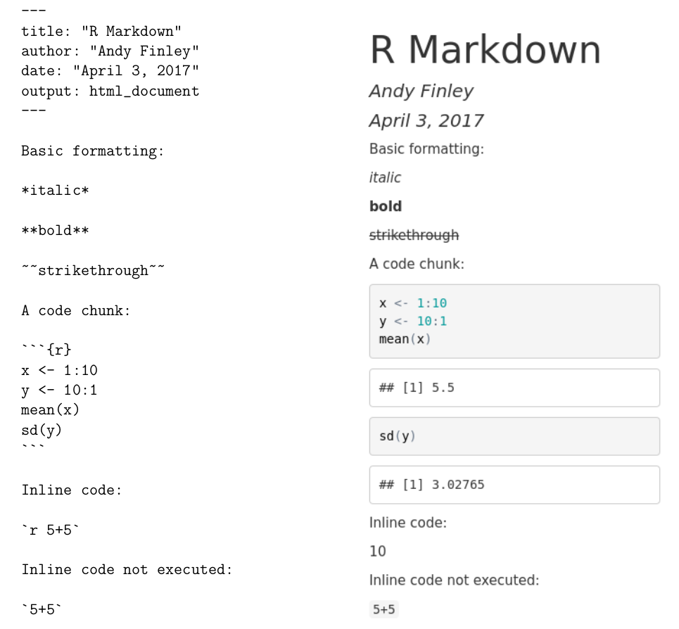
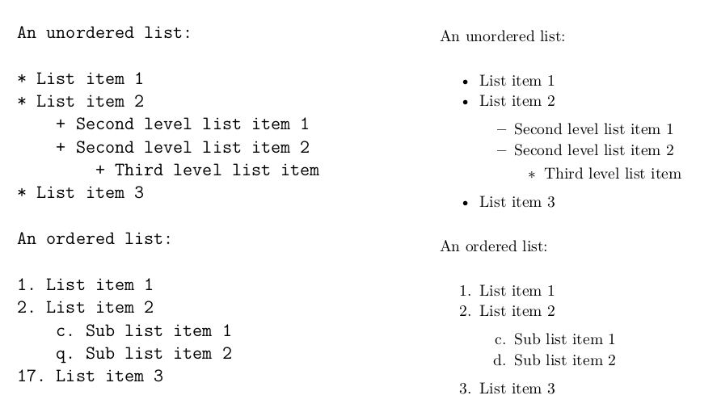
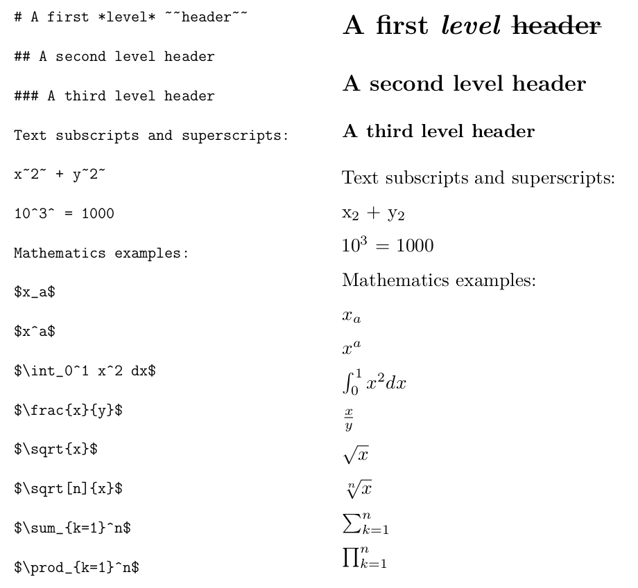
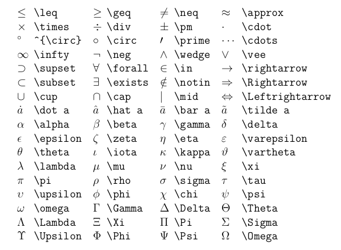
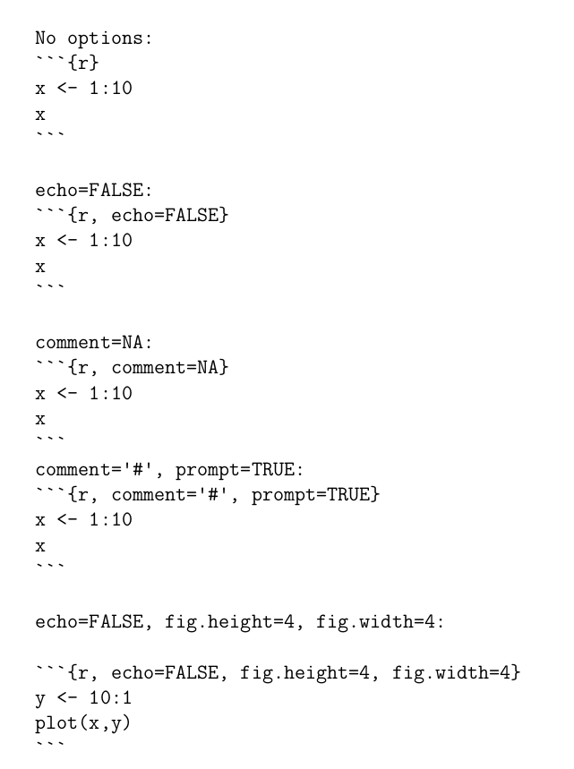
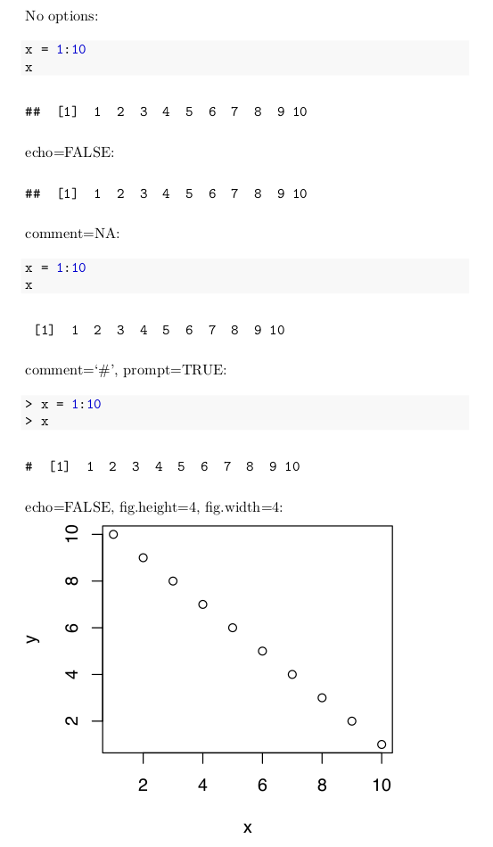

Chapter 4 R Markdown
People typically work on data with a larger purpose in mind. Possibly the purpose is to understand a biological system more clearly. Possibly the purpose is to refine a system that recommends movies to users in an online streaming movie service. Possibly the purpose is to complete a homework assignment and demonstrate to the instructor an understanding of an aspect of data analysis. Whatever the purpose, a key aspect is communicating with the desired audience.
One possibility, which is somewhat effective, is to write a document using software such as Microsoft Word25 and to include R output such as computations and graphics by cutting and pasting into the main document. One drawback to this approach is similar to what makes script files so useful: If the document must be revised it may be hard to unearth the R code that created graphics or analyses. A more subtle but possibly more important drawback is that the reader of the document will not know precisely how analyses were done, or how graphics were created. Over time even the author(s) of the paper will forget the details. A verbal description in a “methods” section of a paper can help here, but typically these do not provide all the details of the analysis, but rather might state something like, “All analyses were carried out using R version 4.1.0.”
RStudio’s website provides an excellent overview of R Markdown capabilities for reproducible research. At minimum, follow the Get Started link and watch the introduction video.
Among other things, R Markdown provides a way to include R code that reads in data, creates graphics, or performs analyses, all in a single document that is processed to create a research paper, homework assignment, or other written product. The R Markdown file is a plain text file containing text the author wants to show in the final document, simple commands to indicate how the text should be formatted (for example boldface, italic, or a bulleted list), and R code that creates output (including graphics) on the fly. Perhaps the simplest way to get started is to see an R Markdown file and the resulting document that is produced after the R Markdown document is processed. In Figure 4.1 we show the input and output of an example R Markdown document. In this case the output created is an HTML file, but there are other possible output formats, such as Microsoft Word or PDF.

FIGURE 4.1: Example R Markdown Input and Output.
At the top of the input R Markdown file are some lines with --- at the top and the bottom. These lines are not needed, but give a convenient way to specify the title, author, and date of the article that are then typeset prominently at the top of the output document.
Next are a few lines showing some of the ways that font effects such as italics, boldface, and strikethrough can be achieved. For example, an asterisk before and after text sets the text in italics, and two asterisks before and after text sets the text in boldface.
More important for our purposes is the ability to include R code in the R Markdown file, which will be executed with the output appearing in the output document. Bits of R code included this way are called code chunks. The beginning of a code chunk is indicated with three backticks and an “r” in curly braces: ```{r}. The end of a code chunk is indicated with three backticks ```. For example, the R Markdown file in Figure 4.1 has one code chunk:
In this code chunk two vectors x and y are created, and the mean of x and the standard deviation of y are computed. In the output in Figure 4.1 the R code is reproduced, and the output of the two lines of code asking for the mean and standard deviation is shown.
4.0.1 Creating and processing R Markdown documents
RStudio has features which facilitate creating and processing R Markdown documents. Choose File > New File > R Markdown.... In the ensuing dialog box, make sure that Document is highlighted on the left, enter the title and author (if desired), and choose the Default Output Format (HTML is good to begin). Then click OK. A document will appear in the upper left of the RStudio window. It is an R Markdown document, and the title and author you chose will show up, delimited by --- at the top of the document. A generic body of the document will also be included.
For now just keep this generic document as is. To process it to create the HTML output, click the Knit HTML button at the top of the R Markdown window26. You’ll be prompted to choose a filename for the R Markdown file. Make sure that you use .Rmd as the extension for this file. Once you’ve successfully saved the file, RStudio will process the file, create the HTML output, and open this output in a new window. The HTML output file will also be saved to your working directory. This file can be shared with others, who can open it using a web browser such as Chrome or Firefox.
There are many options which allow customization of R Markdown documents. Some of these affect formatting of text in the document, while others affect how R code is evaluated and displayed. The RStudio web site contains a useful summary of many R Markdown options at https://www.rstudio.com/wp-content/uploads/2015/03/rmarkdown-reference.pdf. A different, but mind-numbingly busy, cheatsheet is at https://www.rstudio.com/wp-content/uploads/2015/02/rmarkdown-cheatsheet.pdf. Some of the more commonly used R Markdown options are described next.
4.0.2 Text: Lists and Headers
Unordered (sometimes called bulleted) lists and ordered lists are easy in R Markdown. Figure 4.2 illustrates the creation of unordered and ordered lists.

FIGURE 4.2: Producing Lists in R Markdown.
For an unordered list, either an asterisk, a plus sign, or a minus sign may precede list items. Use a space after these symbols before including the list text. To have second-level items (sub-lists) indent four spaces before indicating the list item. This can also be done for third-level items.
For an ordered list use a numeral followed by a period and a space (1. or 2. or 3. or …) to indicate a numbered list, and use a letter followed by a period and a space (a. or b. or c. or …) to indicate a lettered list. The same four space convention used in unordered lists is used to designate ordered sub lists.
For an ordered list, the first list item will be labeled with the number or letter that you specify, but subsequent list items will be numbered sequentially. The example in Figure 4.2 will make this more clear. In those examples notice that for the ordered list, although the first-level numbers given in the R Markdown file are 1, 2, and 17, the numbers printed in the output are 1, 2, and 3. Similarly the letters given in the R Markdown file are c and q, but the output file prints c and d.
R Markdown does not give substantial control over font size. Different “header” levels are available that provide different font sizes. Put one or more hash marks in front of text to specify different header levels. Other font choices such as subscripts and superscripts are possible, by surrounding the text either by tildes or carets. More sophisticated mathematical displays are also possible, and are surrounded by dollar signs. The actual mathematical expressions are specified using a language called LaTeX See Figures 4.3 and 4.4 for examples.

FIGURE 4.3: Headers and Some LaTeX in R Markdown.

FIGURE 4.4: Other useful LaTeX symbols and expressions in R Markdown.
4.0.3 Code Chunks
R Markdown provides a large number of options to vary the behavior of code chunks. In some contexts it is useful to display the output but not the R code leading to the output. In some contexts it is useful to display the R prompt, while in others it is not. Maybe we want to change the size of figures created by graphics commands. And so on. A large number of code chunk options are described in http://www.rstudio.com/wp-content/uploads/2015/03/rmarkdown-reference.pdf.
Code chunk options are specified in the curly braces near the beginning of a code chunk. Below are a few of the more commonly used options. The use of these options is illustrated in Figure 4.5.
echo=FALSEspecifies that the R code itself should not be printed, but any output of the R code should be printed in the resulting document.include=FALSEspecifies that neither the R code nor the output should be printed. However, the objects created by the code chunk will be available for use in later code chunks.eval=FALSEspecifies that the R code should not be evaluated. The code will be printed unless, for example,echo=FALSEis also given as an option.error=FALSEandwarning=FALSEspecify that, respectively, error messages and warning messages generated by the R code should not be printed.The
commentoption allows a specified character string to be prepended to each line of results. By default this is set tocomment = '##'which explains the two hash marks preceding the results in Figure 4.1. Settingcomment = NApresents output without any character string prepended. That is done in most code chunks in this book.prompt=TRUEspecifies that the R prompt>will be prepended to each line of R code shown in the document.prompt = FALSEspecifies that command prompts should not be included.fig.heightandfig.widthspecify the height and width of figures generated by R code. These are specified in inches. For example,fig.height=4specifies a four inch high figure.
Figures 4.5 gives examples of the use of code chunk options.


FIGURE 4.5: Output of Example R Markdown
4.0.4 Output formats other than HTML
It is possible to use R Markdown to produce documents in formats other than HTML, including Word and PDF documents. Next to the Knit HTML button is a down arrow. Click on this and choose Knit Word to produce a Microsoft word output document. Although there is also a Knit PDF button, PDF output requires additional software called TeX in addition to RStudio.27
4.0.5 Tables, kable, and kableExtra
As we’ve seen, R Markdown provides support for including R code, figures, and LaTeX inside the documents we produce. The kable function in the knitr package can make basic tables, while the kableExtra package provides extended functionality to kable to make truly beautiful tables28.
Let’s consider the code that created Table ??. It starts with defining the table’s data which is organized in a Data Frame (see Section 5.4)).
df <- data.frame(Plot = c(1, 1, 2, 2, 2),
Tree = c(1 ,2 ,1 , 2, 3),
x = c(1.2, 2.4, 0.4, 6.3, 2.2),
y = c(3, 4, 2, 6, 5))
df## Plot Tree x y
## 1 1 1 1.2 3
## 2 1 2 2.4 4
## 3 2 1 0.4 2
## 4 2 2 6.3 6
## 5 2 3 2.2 5While this approach does display the results in a readable manner, we’ll often want to produce a more visually appealing table. The function kable from the knitr package allows us to produce simple tables.
| Plot | Tree | x | y |
|---|---|---|---|
| 1 | 1 | 1.2 | 3 |
| 1 | 2 | 2.4 | 4 |
| 2 | 1 | 0.4 | 2 |
| 2 | 2 | 6.3 | 6 |
| 2 | 3 | 2.2 | 5 |
We can improve the table by centering it on the page, including a caption, and changing the column names. While these modifications can be done using kable, the kbl function in the kableExtra package simplifies the process.
library(kableExtra)
kbl(x = df,
col.names = c('Plot ($j$)', 'Tree ($i$)', '$x$', '$y$'),
escape = FALSE,
caption = 'Example table in R Markdown documents.',
align = 'c')| Plot (\(j\)) | Tree (\(i\)) | \(x\) | \(y\) |
|---|---|---|---|
| 1 | 1 | 1.2 | 3 |
| 1 | 2 | 2.4 | 4 |
| 2 | 1 | 0.4 | 2 |
| 2 | 2 | 6.3 | 6 |
| 2 | 3 | 2.2 | 5 |
This looks a lot better. Let’s walk through each of the arguments:
x = dfis the data we show in the table.col.names = c('Plot ($j$)', 'Tree ($i$)', '$x$', '$y$')describes the column names. Notice the use of the dollar signs to include LaTeX notation in the model.escape = FALSEtells R to recognize the$in thecol.namesargument as LaTeX code.align = 'c'centers the table.
The kableExtra package includes many additional functions aimed at producing visually appealing and dynamic tables for R Markdown documents.
4.0.6 LaTeX, knitr, and bookdown
While basic R Markdown provides substantial flexibility and power, it lacks features such as cross-referencing, fine control over fonts, etc. If this is desired, a variant of R Markdown called knitr, which has very similar syntax to R Markdown for code chunks, can be used in conjunction with the typesetting system LaTeX to produce documents. Another option is to use the R package bookdown which uses R Markdown syntax and some additional features to allow for writing more technical documents. In fact this book was initially created using knitr and LaTeX, but the simplicity of markdown syntax and the additional intricacies provided by the bookdown package convinced us to write the book in R Markdown using bookdown. For simpler tasks, basic R Markdown is plenty sufficient, and very easy to use.
4.1 Practice Problems
Practice Problems 4.1-4.6 use the code shown in Figure 3.1 to create a script file called WorldBank.R and an R Markdown document called ch-4-practice-problems.Rmd. Each problem builds upon the previous one.
Practice Problem 4.1: Recreate the script shown in Figure 3.1 and save it as WorldBank.R in your code directory. To become accustomed to typing and properly formatting code, please refrain from simply copying and pasting the code into your script.
Practice Problem 4.2: Using the script you created in ??, create an R Markdown document that has a single code chunk with all the code from the script. Save the R Markdown document as ch-4-practice-problems.Rmd in your code directory. Knit the markdown document to create an HTML document that contains all the code and the resulting figure.
Practice Problem 4.3: In your ch-4-practice-problems.Rmd document, split up the one large code chunk into multiple R code chunks. The first code chunk should consist of lines 1-2 shown in 3.1 that reads in the dataset. The second code chunk should consist of lines 3-6 that extracts the data from 1960. The third code chunk should consist of lines 7 - 9 that create the plot. Before each code chunk, include text in the R Markdown document that briefly describes what each code chunk does.
Practice Problem 4.4: Include an R code chunk argument to prevent the code from displaying in the last code chunk that produces the final plot.
Pracitce Problem 4.5: At the end of the ch-4-practice-problems.Rmd document, add a new second level header labeled Practice Problem 5. Underneath this header, recreate the following text using the LaTeX symbols shown in Figures 4.4 and 4.3:
LaTeX is a cool typesetting system that allows us to easily incorporate commonly used mathematical symbols into our R Markdown documents, such as \(\phi\), \(\rho\), \(\gamma\), and \(\delta\). We can even easily write integrals if we seek to brush up on any previous calculus that we may have learned, such as \(\int x^n dx\).
Practice Problem 4.6: Create a new second level header called Some Code Chunk Info. Recreate the first four bulleted points shown in Section 4.0.3 pertaining to different code chunk options.
4.2 Exercises
Exercise 2 Learning objectives: practice working within RStudio; create a R Markdown document and resulting html document in RStudio; calculate descriptive statistics and produce graphics.
Or possibly LaTeX if the document is more technical↩︎
If you hover your mouse over this Knit button after a couple seconds it should display a keyboard shortcut for you to do this if you don’t like pushing buttons↩︎
It isn’t particularly hard to install TeX software. For a Microsoft Windows system, MiKTeX is convenient and is available from https://miktex.org. For a Mac system, MacTeX is available from https://www.tug.org/mactex/↩︎
Recall from Section 2.4 that R functions are stored in packages and we need to install and load the packages in order to use them.↩︎